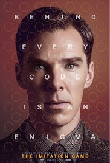
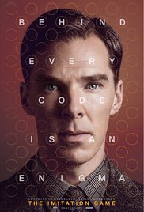

We hear Alan Turing saying, "Are you paying attention? Good. If you're not listening carefully, you will miss things. Important things. I will not pause, I will not repeat myself, and you will not interrupt me. You think that because you're sitting where you are and I am sitting where I am, that you are in control of what is about to happen. You are mistaken. I am in control. Because I know things that you do not know. What I need from you now is a commitment. You will listen closely and you will not judge me until I am finished. If you cannot commit to this, then please leave the room. But if you choose to stay, remember that you chose to be here. What happens from this moment forward is not my responsibility. It's yours. Pay attention."
In a flashback to September 1939 in London, War has been declared with 800,000 people being evacuated from their homes. On the train, a 27-year-old Alan Turing (Benedict Cumberbatch) admires a kid doing crossword puzzles. He arrives at Bletchley Park, guarded by Royal Naval officers. He waits in the office of Commander Denniston (Charles Dance). When the Commander arrives, Alan is cold and seems to lack humour. The Commander asks why Alan wants to work for the government; he replies he doesn't. He mentions that he's not very political and the Commander says it may be the shortest job interview ever. Alan mentions he doesn't speak German but tells the Commander that he's one of the best mathematicians in the world. He considers German codes to be like puzzles, which he enjoys solving. The Commander calls for Alan to be removed by his secretary so Alan mentions Enigma, revealing he knows about the top secret program he's being considered for. Alan explains that Enigma is the greatest encryption device in history and if the Allies can crack the code, it will end the war. The Commander says everyone thinks Enigma is unbreakable. Alan says to let him try and they'll know for sure.
| Photo | Actor | Character |
|---|---|---|
|
|
Benedict Cumberbatch | Alan Turing |
|
|
Keira Knightley | Joan Clarke |